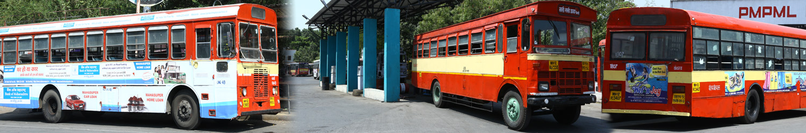
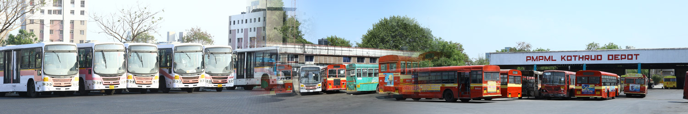
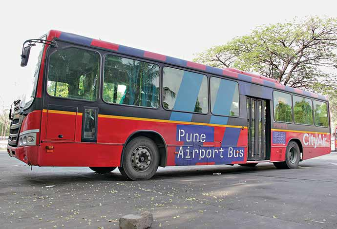
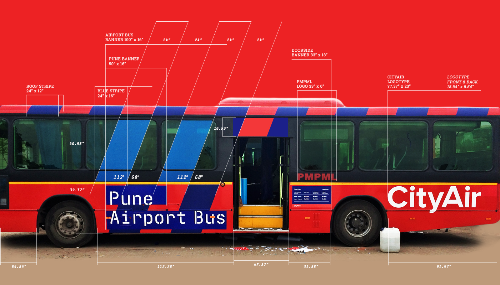

The regular bus service forms the backbone of transportation for the city. Ferrying 12 lakh passengers daily,
on an average, it is presently one of the most trusted modes of commuting amongst Pune residents.
Plying from 5.30 AM till midnight, across the busiest routes, these buses are known for their punctuality
and efficient
service. Presently the routes cover a radius of 20 kms in and around Pune and Pimpri Chinchwad area.
Plans of further expansion are on their way to be implemented.
Nearly 1923 buses having around 3019 schedules providing around 21218 trips per day for the passengers.
Rainbow Buses
 The Rainbow BRT (Bus Rapid Transit) service is the fastest, safest, cost effective and comfortable mass transit option
The Rainbow BRT (Bus Rapid Transit) service is the fastest, safest, cost effective and comfortable mass transit option
rendered by PMPML. Rainbow Buses offer an integrated network of transportation which covers both PMC and PCMC areas.
Apart from regulating the growing traffic in the city and providing a comfortable journey to passengers ,
these buses also help in reducing the severity of pollution in the city.
This initiative started off with buses plying across 4 corridors, namely,
Aundh to Ravet.
Sangramwadi to Vishrantwadi.
Nashik Phata to Wakad.
Yerwada to Wagholi.
Rainbow BRT caters to 51 routes through 319 buses plying across the 4 corridors.
The Rainbow BRT project endeavours to provide better service at a lower cost with financial support from
Jawaharlal Nehru
National Urban Renewal Mission (JnNURM) of Government of India. Specific components of the project in
Pimpri Chinchwad
are being funded under the Sustainable Urban Transport Project (SUTP), an initiative by the Ministry of Urban
Development,
Government of India.
The project is also supported by the World Bank, UNDP and GEF.
Night Buses


This is our service dedicated to a city that works even during night.
PMPML has always prioritized the safety and convenience of commuters,
and this becomes apparent through the arrangement. That makes it certain that no one is left behind.
A fleet of 7 night buses called the Raatranis have been plying on 7 busy routes,
covering the period between the start and close of the regular bus service.
PMPML has rightfully kept the crowd density in mind while deciding upon the routes.
Airport Buses


A city that’s turning into a focal point of growth have frequent visitors.
PMPML endeavors to make transportation as convenient for them as possible.
The Airport Special buses are specially run to offer travellers hassle free and comfortable
ride to and from the airport. These AC, buses have, in no time, become the most popular
choice of transport for many. Since reaching the airport on time is crucial, these buses
are available at an interval of every 30 minutes on the route between Pune Station and the airport .
Tickets to avail these buses can be obtained both online and offline, .
A total of 6 Ac buses cater the service from boarding points, Hinjewadi and Pune Station.
The growing popularity of this service is a matter of pride for PMPML and we plan to strengthen these services.
on an average, it is presently one of the most trusted modes of commuting amongst Pune residents.
Plying from 5.30 AM till midnight, across the busiest routes, these buses are known for their punctuality
and efficient service. Presently the routes cover a radius of 20 kms in and around Pune and Pimpri Chinchwad area.
Plans of further expansion are on their way to be implemented.
Nearly 1923 buses having around 3019 schedules providing around 21218 trips per day for the passengers.
The Rainbow BRT (Bus Rapid Transit) service is the fastest, safest, cost effective and comfortable mass transit option rendered by PMPML. Rainbow Buses offer an integrated network of transportation which covers both PMC and PCMC areas.
Apart from regulating the growing traffic in the city and providing a comfortable journey to passengers ,
these buses also help in reducing the severity of pollution in the city.
This initiative started off with buses plying across 4 corridors, namely,
Aundh to Ravet.
Sangramwadi to Vishrantwadi.
Nashik Phata to Wakad.
Yerwada to Wagholi.
Rainbow BRT caters to 51 routes through 319 buses plying across the 4 corridors.
The Rainbow BRT project endeavours to provide better service at a lower cost with financial support from
Jawaharlal Nehru National Urban Renewal Mission (JnNURM) of Government of India. Specific components of the project in
Pimpri Chinchwad are being funded under the Sustainable Urban Transport Project (SUTP), an initiative by the Ministry of Urban
Development, Government of India.
The project is also supported by the World Bank, UNDP and GEF.
PMPML has always prioritized the safety and convenience of commuters,
and this becomes apparent through the arrangement. That makes it certain that no one is left behind.
A fleet of 7 night buses called the Raatranis have been plying on 7 busy routes,
covering the period between the start and close of the regular bus service.
PMPML has rightfully kept the crowd density in mind while deciding upon the routes.
PMPML endeavors to make transportation as convenient for them as possible.
The Airport Special buses are specially run to offer travellers hassle free and comfortable
ride to and from the airport. These AC, buses have, in no time, become the most popular
choice of transport for many. Since reaching the airport on time is crucial, these buses
are available at an interval of every 30 minutes on the route between Pune Station and the airport .
Tickets to avail these buses can be obtained both online and offline, .
A total of 6 Ac buses cater the service from boarding points, Hinjewadi and Pune Station.
The growing popularity of this service is a matter of pride for PMPML and we plan to strengthen these services.